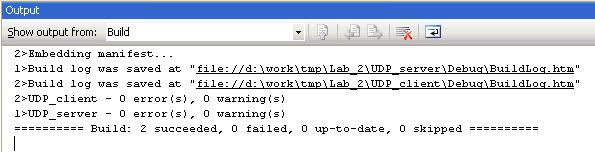
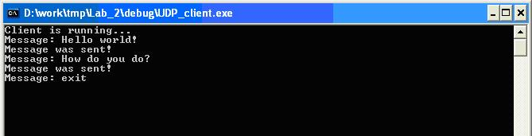

| Лабор. работа №1 |
| Лабор. работа №2 |
| Лабор. работа №3 |
| Лабор. работа №4 |
| Документация |
| Архив |
| Вопросы |
Передача и прием пакетов с подтверждением через протокол UDP c использованием методов криптографии для закрытия данных, передаваемых между программами клиента и сервера.
| Цель работы |
Разработка программы-сервера и программы-клиента в архитектуре взаимодействия “клиент-сервер” с использованием протокола UDP и библиотеки WINSOCK. Обеспечить закрытие данных (шифрование), при передаче их по сети между программами клиента и сервера.
| Задание |
Разработать программу клиента, которая должна:
- обеспечивать ввод сообщений и отправку их на сервер;
- шифрование передаваемых данных.
Разработать программу сервера, которая должна:
- ожидать запросов от программ клиентов на соединение;
- устанавливать соединение с клиентами;
- принимать данные от клиентов, расшифровывать и выполнять их обработку.
| Алгоритм работы программы-сервера |
Для того, чтобы процессы-клиенты могли связаться с сервером, сервер создает сокет для обмена данными с помощью системного вызова socket. Данная операция также производится и в клиентской программе.
Далее выполняется операция получения локального адреса. Это нужно для того, чтобы все запросы на соединения, приходящие на данную ЭВМ и обращающиеся к указанному порту, операционная система направляла данному процессу. Операция производится посредством системного вызова bind, в котором указывается созданный ранее сокет, IP–адрес ЭВМ (как правило, это константа 0) и идентификатор процесса, т. е. порт.
Далее в цикле происходит прием данных через сокет от клиентов с помощью системного вызова recvfrom. Принятая строка выводится на экран. Работа программы-сервера завершается в том случае, если принимается сообщение 'exit'.
| Алгоритм работы программы-клиента |
Работа программы-клиента во многом схожа с работой программы-сервера. Вначале создается сокет для обмена данными и вызывается функция bind для получения локального адреса. Далее в цикле пользователь набирает строки, которые отсылаются на сервер (системный вызов sendto). Цикл выполняется до тех пор, пока не будет передано сообщение 'exit'.
По окончании работы процесс-клиент и процесс-сервер закрывают свои копии сокетов (системный вызов closesocket) и уничтожаются.
Для обеспечения закрытия данных, передаваемых между клиентом и сервером по сети, выполняется их шифрование при передаче и расшифровка при приеме.
| Порядок выполнения лабораторной работы |
1. Запустить Microsoft Visual Studio 2005.
2. Выбрать в главном меню File->Open->Project/Solution.
3. Указать путь к файлу lab_2.sln и далее нажать кнопку Open.
4. Слева в окне выбрать вкладку Solution Explorer. Все файлы проекта будут представлены в этом окне. Двойное нажатие левой кнопкой мыши на файле откроет его для редактирования в основной области экрана.

Рисунок 1. Окно Solution Explorer
5.Нажать кнопку F7. Проект будет откомпилирован целиком. Внизу в окне Output будет представлен отчет.

Рисунок 2. Окно Output
Обратите внимание на последнюю строчку в проекте, в ней приведены результаты компиляции:
========== Build: 2 succeeded, 0 failed, 0 up-to-date, 0 skipped ==========
6. В папке Debug (или Release) будут созданы исполняемые файлы программ: UDP_server.exe – программа-сервер, UDP_client.exe – программа-клиент.
| Описание работы программ |
Программа-сервер
После запуска сервера, программа автоматически перейдет в режим ожидания соединения от клиента. Никаких действий более выполнять не требуется. Для выхода из программы использовать комбинацию клавиш CTRL+C или отправить сообщение «exit» с клиентской консоли. После отправки сообщения клиентом в окне сервера появится принятая информация.

Рисунок 3. Работа сервера
Программа-клиент
После запуска программы необходимо ввести сообщение и нажать клавишу Enter для отправки. Работа клиента и сервера будет завершена, после отправки клиентом сообщения «exit».

Рисунок 4. Работа клиента